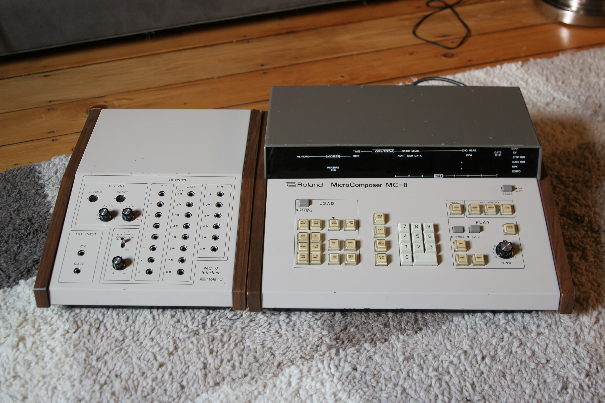
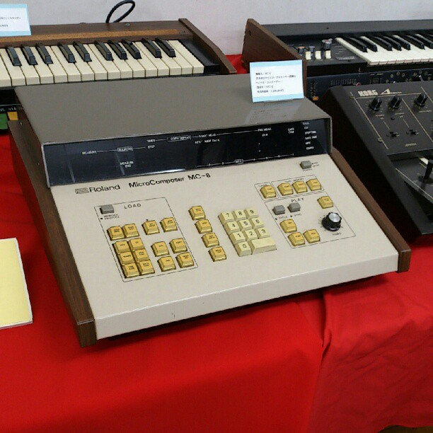

Roland MC-8 MicroComposer
The music machine you programmed with a calculator keypad instead of a keyboard

Overview
The Roland MC-8 MicroComposer was one of the earliest stand-alone microprocessor-driven CV/Gate music sequencers, introduced in early 1977 at US$4,795 (¥1,200,000 JPY). It had no piano keyboard — just a calculator-style numeric keypad. Roland called it a "computer music composer." Notes were entered by typing numbers via the keypad (the preferred method), backed by 16KB of RAM allowing a maximum sequence of 5,200 notes — a huge leap from the 8-16 step sequencers of the era. Backup was via cassette tape and could take 45 minutes to an hour; the memory was volatile, so power loss meant total data loss. Only 200 units were sold worldwide, but each went to a major figure in electronic music: Kraftwerk, Yellow Magic Orchestra, Giorgio Moroder, Hans Zimmer, Tangerine Dream, The Human League, and Suzanne Ciani.
Deep dive
The MC-8 was based on a prototype by Canadian composer and technologist Ralph Dyck, who did R&D for Roland. Roland switched to the Intel 8080A 8-bit microprocessor and increased Dyck's RAM from 512 bytes to 16KB. The machine provided eight control voltage outputs, eight gate outputs, and a six-bit multiplex output with a special seventh bit for portamento control. All parameters were variable — scale and time-base could be assigned number values to suit the piece being programmed, making the machine versatile but unfriendly.
The calculator-style numeric keypad was the primary interaction surface. Real-time recording was possible but awkward. The workflow was: study the piece, break it into numerical parameters, type them in. A programmer's approach to music. The 1981 follow-up MC-4 continued this paradigm in a smaller, cheaper package, but the MC-8's radical "music as code" philosophy was never as pure again.
Yellow Magic Orchestra was the earliest band known to use the MC-8, on their 1978 self-titled debut and Ryuichi Sakamoto's Thousand Knives. Hideki Matsutake operated it as programmer — the band called him and the MC-8 an "inevitable factor" in both production and live performance. Billboard noted in 1979 that computer-based technology allowed YMO to create sounds not possible before.
Kraftwerk used the MC-8 on The Man-Machine (1978). Richard James Burgess triggered prototype Simmons SDS5 electronic drums via the multiplex outputs for Landscape's From the Tea-rooms of Mars (1981). The duo demonstrated the MC-8 on BBC TV's Tomorrow's World. Tangerine Dream owned three. Hans Zimmer learned electronic composition on it. Giorgio Moroder's From Here to Eternity was sequenced with it.
The MC-8 collapsed the distinction between programmer and musician in a way no device had before. The numeric keypad-as-musical-interface paradigm influenced Roland's subsequent MC-4, the broader workstation concept, and the DAW-based production workflows that would dominate decades later. Its approach — music as data entry, separated from real-time performance — remains controversial and fertile.
Team & pioneers
- Ralph Dyck Canadian composer and technologist who developed the prototype for Roland. Interviewed in 2010 as "Godfather of the MC-8."
- Ikutaro Kakehashi Founder of Roland Corporation; oversaw development and brought the MC-8 to market.
- Hideki Matsutake Programmer who operated the MC-8 for Yellow Magic Orchestra; known as their "fourth member."
Media
